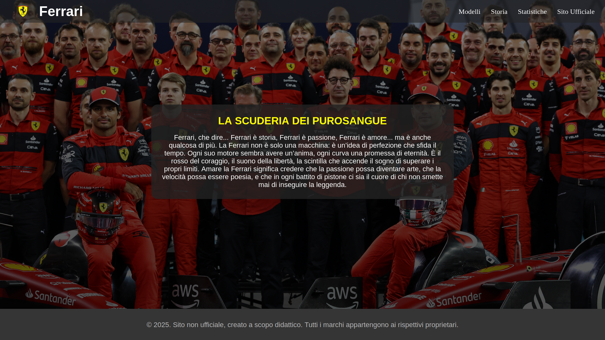
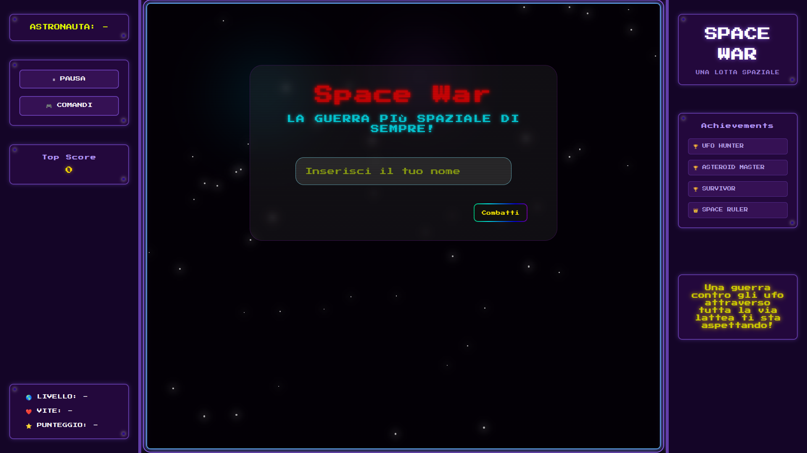
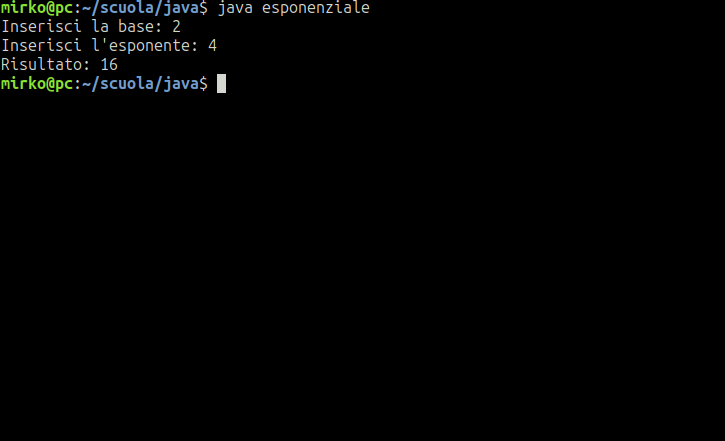
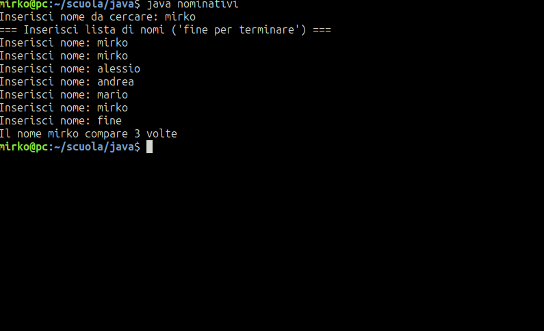
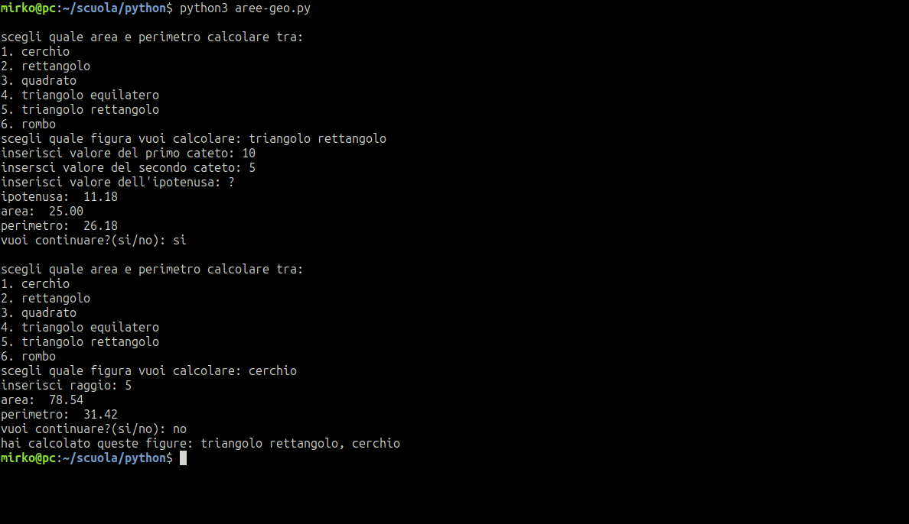
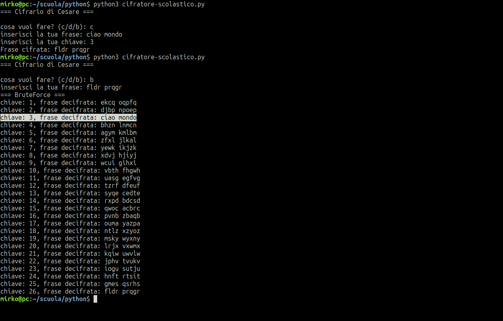

17 anni, Gela. Appassionato di tecnologia, programmazione e sviluppo software. Amo esplorare nuove tecnologie e migliorare le mie competenze ogni giorno. In questo portfolio, condivido i miei progetti, le mie competenze e il mio percorso di crescita nel mondo dell'informatica.

Primo sito web realizzato. Pagina dedicata alla Ferrari con HTML e CSS puro. Il punto di partenza di tutto.

Gioco browser-based in HTML, CSS E JavaScript. Game loop, collisioni, input da tastiera — zero framework, tutta logica scritta a mano.

Programma Java che calcola la potenza di un numero intero. L'utente inserisce base ed esponente e il programma restituisce il risultato calcolato tramite un ciclo iterativo, senza utilizzare librerie matematiche esterne.

Programma Java che conta quante volte un nome specifico appare all'interno di una lista inserita dall'utente. La lista viene inserita nome per nome e termina quando si scrive fine.

Programma Python che calcola area e perimetro di diverse figure geometriche tramite un menu interattivo. Tiene traccia delle figure calcolate durante la sessione.

Implementazione del Cifrario di Cesare in Python. Permette di cifrare e decifrare messaggi tramite sostituzione alfabetica con una chiave numerica, e include una modalità bruteforce per decriptare messaggi senza conoscere la chiave.